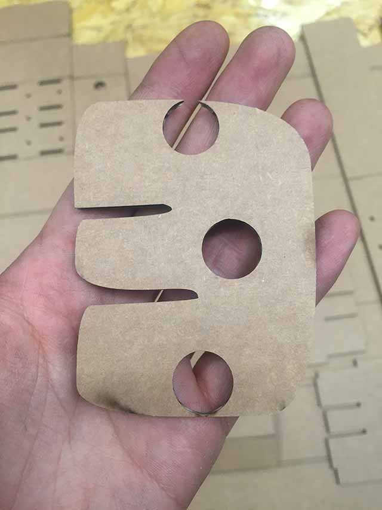

week16. Mechanical design, machine design
Automoate your machine, document the group project and your individual contribution
PAINTING MACHINe ('GA' MACHINE')
LAB DOCUMENTATION
 |
 |
 |
LASER CUT PIECES |
CLOSER LOOK AT ETCHED PART |
ROD PIECES |
 |
||
MIDDLE PART CUT |
FOLDING IN THE SIDE PART |
FOLDED In SIDE PART |
 |
||
FOLDING IN PROGRESS |
USED DOUBLE-SIDED TAPE |
FINISHED NODES |
 |
 |
|
BEFORE FULLY ASSEMBLED |
DOWN VIEW OF MIDDLE PART |
ROD IN ITS PLACE |
STEPPER INSIDE |
SUPPORT PART INCLUDED |
SUPPORT PART ZOOM IN |
MY CONTRIBUTION
CARDBOARD LASERCUT DESIGN
Recommended Laser setting for Epilog 120 Watt:
Etch: Speed 100, Power 13 / Cut: Speed 60, Power 50
By looking at the tutorial of MTM sites, tried the laser cutting of which I tested for cutting as in Speed 60, Power 50 & for etching Power 18%, 23%. Since our laser-cuter was very old and not in perfect state I had to level up the power to make the etching work.
Then after making 3 nodes we needed some kind of support to make the node steady and this is when I quickly created back support using AutoCAD. It wasn't as hard as acrylic but it was hard enough to hold the node to move as in parallel lines.
As we scheduled we made clear with jobs & responsibilities of who’s going to make PCB for USB connectors and cutting the cardboard at first. Since I can always cut cardboard later on, I made the PCB with Bas’ design and soldered it.
PCB COMPONENTS LAYOUT |
CONNECTORS (BAS' DESIGN) |
PCB / WIRES / SOLDER
Comparing the board on the left, I want to connect two pins with OUT1 & OUT2 with one connectors and OUT1 & OUT2 with others in schematic design
Obviously what I have been participating with my Fab machine design group project is to cut the cardboard of my own, do the electronic as much as i can and do the programming. As I have done lots of failures with PCB making I don’t hesitate no more to do new stuff. After making PCB and connecting the wire with female header cable now we have USB cable to go.
It was important to cut wire and make it as short as possible to be connected with PCB. Since longer copper exposed can be too risky and sometimes It causes problem with connections.
With controlling the movement me and other co-workers are having serious problem with finding reference and now I’m looking at an PCB milling information site for connecting virtual machine.
Right now we’ve been making the machine that prints our drawings but with three axes we’re up to moving 3-axes in and only for a few seconds. We’ve been spending a lot of time working on internet about programming python to do a few seconds trick.
Obviously we did all participated in making parts, since the most trickiest part was making it to work with python code. None of us were familiar with python code so we struggled together to solve the problem. As far as we have done before the presentation was to make sure the Z coordinates are working with manual designation.
MANUAL CO-ORDINATES |
By participating in machine making project, I've learned about controlling stepper motors with 'one' board and what I've learnt further was that by looking at the datasheet I can calculate how much Ampere the motor holds and I learnt that the board can take upto 2A which means the motor can manage two stepper motors at the same time. Another reminder of how important it is to look at the datasheet of a microcontroller.